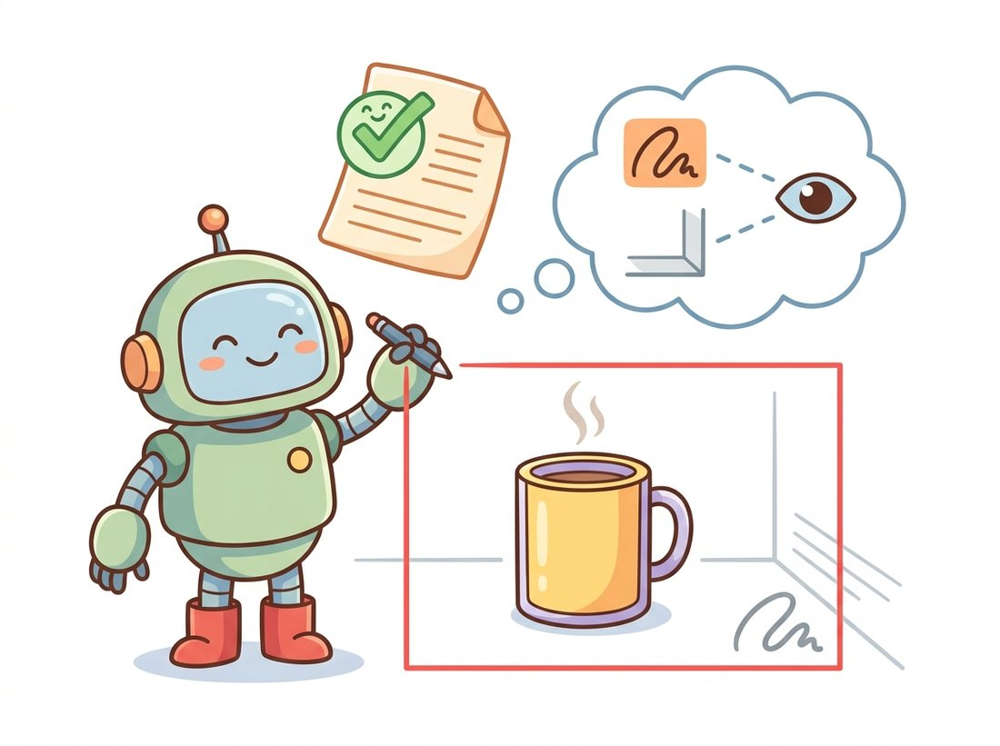

"The theory was lovely. Then they handed me four hundred photos of their specific kind of bolt, half of them blurry, and said: by Friday. That is when I learned that detection is ten percent architecture and ninety percent labels, learning rate, and remembering which folder the validation set lives in."
A Fine-Tuned Detector With a Deadline
In practice you almost never design a detector or train one from scratch; you fine-tune a pretrained modern detector on a few hundred to a few thousand of your own labeled images, validate its mAP honestly, and export it to a runtime your deployment target can run. The four prior sections gave you the conceptual map; this one is the route you actually drive. The workflow is the same regardless of architecture: collect and label data in a standard format, pick a pretrained model sized for your speed budget, fine-tune with sensible augmentation and a transfer-learning schedule, read validation mAP while guarding against the data leaks and easy-set illusions that inflate it, and export to ONNX or TensorRT for the edge. We run it concretely with Ultralytics YOLO, the most common production toolkit, and flag the failure modes that bite real teams.
Everything from Section 23.1 to Section 23.5 was about how detectors work. This section is about getting one to work for you. The honest truth of applied detection is that the architecture choice, the subject of four sections, is usually the smallest decision; far more of your time goes to labeling, to the transfer-learning recipe from Chapter 21, to reading the metrics of Section 23.1 without fooling yourself, and to exporting for the hardware of Chapter 28. We walk that whole route once, end to end.
1. Collecting and Labeling Data Beginner
A detector learns from images paired with box annotations, so the first task is to produce that pairing for your domain. Two practical rules dominate. First, label what you will deploy on: photograph the objects in the lighting, angles, backgrounds, and resolution your camera will actually see, because a detector trained on clean catalogue photos fails on a noisy warehouse feed. Second, label consistently: agree on exactly how tight a box should be, how to handle occluded or truncated objects, and which borderline cases count, then apply the rules uniformly, since inconsistent labels put a noise floor under your mAP that no architecture can lift.
Annotation tools (Label Studio, CVAT, Roboflow, and others) export to a handful of standard formats. The two you will meet most are COCO JSON (one file listing all images and annotations, corner-format boxes, used by torchvision and the DETR family) and the YOLO text format (one .txt per image, one line per object: class index and a center-format box normalized to $[0, 1]$, the format and conventions from Section 23.1). Knowing both, and being able to convert between them, saves more debugging hours than any modeling trick. Figure 23.6.1 shows the whole workflow this section follows.
2. Splitting Data Without Fooling Yourself Intermediate
Before training, split your images into training, validation, and test sets. The cardinal rule, the same one from Chapter 21, is that no information may leak from validation or test into training. In detection this rule has a sharp, easy-to-miss edge: if your images come from video or from burst captures, near-identical consecutive frames must all go to the same split. Put frame 100 in training and frame 101 in validation and your validation mAP will be gloriously high and completely meaningless, because the model has effectively seen the validation images. Split by source clip, by scene, or by capture session, never by random per-frame shuffle, whenever frames are correlated.
The single most common way a custom-detector project goes wrong is a validation mAP that looks wonderful and collapses in deployment. Three culprits account for nearly all cases: (1) leakage from correlated frames split across train and val, as above; (2) an easy validation set that does not contain the hard cases (occlusion, small objects, unusual lighting) the deployment will face, so mAP measures the easy slice only; (3) label noise in validation that either flatters a model that learned the same mistakes or unfairly penalizes a correct one. Before you trust any mAP, visualize the model's predictions on the validation images by eye, check the size-stratified APs (Section 23.1) so small objects are not hiding a failure, and confirm your split has no correlated-frame leakage. Treat a suspiciously high number as a bug to investigate, not a result to celebrate.
3. Fine-Tuning a Modern Detector Intermediate
With clean, split data you fine-tune. We use Ultralytics YOLO because it is the most widely deployed toolkit and reduces the whole training loop to a few lines, but the principles transfer to torchvision and the DETR family. The data is described by a small YAML file naming the train and validation image folders and the class names; the model loads pretrained COCO weights (transfer learning from Chapter 21, since COCO features are an excellent starting point for almost any natural-image domain); and a single train call runs the schedule with sensible default augmentation. The code below is a complete, runnable fine-tuning script.
# Fine-tune a COCO-pretrained YOLO on a custom dataset described by a YAML file.
# Transfer learning from COCO means the backbone already sees natural-image
# features, so a short schedule on your own classes is usually enough.
from ultralytics import YOLO
# data.yaml lists: path, train: images/train, val: images/val, names: {0: bolt, 1: nut}
model = YOLO("yolo11n.pt") # nano model, COCO-pretrained; start small
results = model.train(
data="data.yaml",
epochs=100,
imgsz=640, # train/infer resolution; match your deployment
batch=16,
lr0=0.01, # initial LR; YOLO cosine-decays it automatically
patience=20, # early-stop if val mAP stalls for 20 epochs
augment=True, # mosaic, flips, HSV jitter (Chapter 21 policies)
)
metrics = model.val() # evaluates on the val set
print(metrics.box.map) # COCO mAP@[0.50:0.95]
print(metrics.box.map50) # mAP@0.50
model.train call drives the whole schedule (cosine-decayed lr0, patience early-stopping, default augmentation), and the yolo11n.pt nano model is the right place to start: it trains fast and tells you quickly whether your data and labels are sound before you spend time on a larger model.Two recipe choices matter most. Start with the smallest model (the "n" nano variant) to get a fast signal that your pipeline and labels are correct; only scale up to "s", "m", or larger once you have confirmed the data is sound and you need more accuracy. And match the training image size to your deployment resolution: train at $640$ and deploy at $1280$ and the model sees objects at unfamiliar scales. The augmentation defaults (mosaic, horizontal flip, HSV jitter) implement the policies of Chapter 21 and are usually a good starting point, though mosaic is often disabled for the final few epochs so the model finishes on un-augmented images.
Who: a retail-analytics startup training a detector to find specific product packages on store shelves from phone photos, 2024. Situation: their training images came from the brand's marketing team and their validation images from a separate field-collection effort. The first model scored an excellent validation mAP and they prepared to ship. Problem: in a pre-launch field test the detector failed badly on ordinary store photos. Investigating, they found the marketing training images all carried a faint corner watermark and a consistent studio background, and the model had partly keyed on those cues; the validation set happened to share the studio look, so validation mAP was inflated. Decision: they re-collected training data in real stores, re-split by store location to prevent any single store's shelf from spanning train and val, and added heavy background and color augmentation to break the spurious cues. Result: validation mAP dropped to a lower but honest number that matched field performance, and the shipped model worked. Lesson: a detector will exploit any shortcut your data offers, including watermarks and backgrounds; an mAP is only as trustworthy as the realism and independence of the set it is measured on, exactly the leakage and easy-set warnings of subsection 2. The illustration below shows the failure: a proud detector boxing the watermark instead of the product.

4. Diagnosing Training Failures Advanced
When a custom detector trains poorly, the cause is almost never the architecture and almost always one of a short list of practical faults. Table 23.6.1 is the checklist experienced practitioners run through; the column order roughly matches how often each cause appears. The most common by far is a data or label problem: a class-index off-by-one, boxes in the wrong format (center versus corner, normalized versus pixel, the conversions from Section 23.1), or annotations that are simply inconsistent. The single most useful debugging action is to render a handful of training images with their loaded labels drawn on top, before any training, and confirm the boxes sit on the objects; this five-minute check catches the majority of "the model will not learn" reports.
| Symptom | Likely cause | Fix |
|---|---|---|
| Loss never drops, mAP near 0 | Wrong box format or class indices | Render loaded labels on images; verify format and index base |
| Train mAP high, val mAP low | Overfitting or leakage | More data and augmentation; re-split by source to remove leakage |
| Val mAP high, deployment poor | Easy or non-representative val set | Re-collect val in deployment conditions; check size-stratified AP |
| Small objects missed | Train resolution too low | Raise imgsz; use a model with finer pyramid levels |
| Loss explodes to NaN | Learning rate too high | Lower lr0; confirm warmup is enabled |
Once trained, running inference and exporting to a deployment runtime are each a single call. Ultralytics wraps the entire ONNX and TensorRT export toolchain, which by hand involves tracing the model, pinning opset versions, and wiring the NMS into the graph:
# Load the best checkpoint from training, run inference, and export the model
# to deployment runtimes. Each of predict and export is a single call that
# hides the tracing and NMS-graph surgery you would otherwise write by hand.
model = YOLO("runs/detect/train/weights/best.pt")
# Inference on new images: returns boxes, classes, scores per image.
preds = model.predict("new_shelf.jpg", conf=0.4, imgsz=640)
preds[0].show() # draw the boxes
# Export for deployment. One line each:
model.export(format="onnx") # portable ONNX graph, runs anywhere
model.export(format="engine") # TensorRT engine for NVIDIA edge devices
best.pt checkpoint that Code Fragment 1 produced. model.predict returns boxes, classes, and scores, while model.export bakes the decoding and NMS into a portable ONNX graph or a TensorRT engine; doing either by hand is a few hundred lines of fragile tracing and graph surgery, the techniques Chapter 28 treats in depth.The ONNX export produces a portable graph that runs under ONNX Runtime on CPU, mobile, or the browser; the TensorRT export produces a hardware-optimized engine for NVIDIA Jetson and server GPUs, often two to five times faster than the PyTorch model. Doing either by hand is a few hundred lines of fragile tracing and post-processing graph surgery; the library does it in one call and bakes the decoding and NMS into the exported graph so the runtime needs no Python. These are the techniques the efficiency chapter, Chapter 28, treats in depth.
The expensive, error-prone labeling stage of subsection 1 is the part of this workflow that 2024 to 2026 research is most aggressively automating. Open-vocabulary detectors such as Grounding DINO and YOLO-World (Section 23.5) can detect objects from a text prompt with zero domain labels, and teams increasingly use them to auto-label a first pass that human annotators only correct, cutting labeling cost by large factors; the Segment Anything Model of Chapter 24 is used the same way for masks. Self-training and active learning loops let a partially trained detector propose labels for the unlabeled pool, surfacing only its most uncertain images for human review. And the foundation backbones of Chapter 25, such as DINOv2, give such strong pretrained features that fine-tuning a detector now needs far fewer labels than the COCO-era recipes assumed. The frontier of applied detection is shifting from "design the model" to "spend your human attention only where the model is genuinely unsure."
The Ultralytics YOLO("yolo11n.pt") call that fits in one line will, on first run, quietly download the pretrained weights, set up the augmentation pipeline, detect your GPU, pick a batch size, and configure a cosine learning-rate schedule with warmup, all the machinery that a 2016-era detection paper would have devoted half its experimental section to describing. A practitioner today can fine-tune a competitive detector before lunch on hardware that costs less than the GPUs the original papers ran on, which is the quiet, cumulative payoff of the decade of research this chapter traced.
5. The Whole Chapter, in One Pipeline Advanced
Step back and notice how this section reuses everything before it. The boxes and mAP of Section 23.1 are the labels you create and the metric you read. The architecture you fine-tune is a member of one of the families from Sections 23.2 to 23.5, chosen by the speed-accuracy trade-off those sections laid out: a YOLO for the edge, a Faster R-CNN for small-object recall, a DINO-DETR for top accuracy. The augmentation and transfer learning come from Chapter 21, the export targets are the edge devices of Chapter 28, and the moment you need pixel-precise outlines instead of boxes you will extend this exact workflow into the segmentation of Chapter 24. Detection is the hub, and you have now driven the full loop from raw images to a deployable model. Put the whole chapter into practice in the Hands-On Lab at the end of this section, which walks the entire pipeline once and leaves you with a trained, validated, and exported detector you can show.
A colleague reports a 0.92 validation mAP@0.50 on a custom traffic-sign detector trained from dashcam video, but the model performs poorly on a new drive. List the three most likely causes from subsection 2 and Table 23.6.1, and for each describe the one concrete check or fix you would apply. Which cause is most probable given that the data is dashcam video, and why?
Download a small public detection dataset (for example a Roboflow Universe dataset or the Oxford-IIIT Pet boxes), write its data.yaml, and fine-tune yolo11n.pt for a modest number of epochs using the script in subsection 3. Report the validation mAP@0.50 and mAP@[0.50:0.95], then render the model's predictions on five validation images and inspect them by eye. Note any class or size for which the model struggles and relate it to the size-stratified AP discussion of Section 23.1.
Take your trained model from Exercise 23.6.2 and benchmark inference latency three ways: the native PyTorch .pt model, the exported ONNX model under ONNX Runtime, and (if you have an NVIDIA GPU) the TensorRT engine. Average over many runs after warmup, and report frames per second for each at your deployment imgsz. Write a short analysis of the speedup each export gives, the accuracy (if any) it costs, and which one you would ship for a CPU-only server versus an NVIDIA Jetson, connecting your reasoning to the deployment considerations of Chapter 28.
Hands-On Lab: Train, Evaluate, and Export a Detector on a Small Custom Set
Objective
Take a small custom detection dataset from raw labels to a deployable model: fine-tune a COCO-pretrained YOLO on roughly a hundred of your own images, read its mean average precision (mAP) without fooling yourself, and export the trained detector to a portable ONNX graph you can run anywhere. The artifact you finish with is a working detector for a domain of your choosing plus an honest one-paragraph evaluation report, exactly the deliverable an applied team ships.
What You'll Practice
- Writing a YOLO-format dataset and its
data.yaml, the labeling conventions of Section 23.1 - Splitting correlated images without leakage, the cardinal rule of subsection 2
- Fine-tuning a pretrained one-stage detector (Section 23.3) with the transfer-learning recipe from Chapter 21
- Reading validation mAP@0.50 and mAP@[0.50:0.95] and verifying it by eye
- Exporting to ONNX for the edge runtimes of Chapter 28
Setup
A machine with Python 3.9 or newer (a free Colab GPU runtime is ideal but a CPU works for the nano model on a small set). Install the toolkit and the ONNX export backend:
pip install ultralytics onnx onnxruntimeFor data, either label about a hundred of your own photos of a single object class with a tool such as Label Studio or CVAT exporting to YOLO format, or download a tiny public set (for example a Roboflow Universe export already in YOLO format). Keep it small on purpose: the goal is to drive the whole pipeline, not to chase a high number.
Steps
Step 1: Lay out the dataset and write data.yaml
Arrange images and label files in the folder structure Ultralytics expects, then describe it with a YAML file naming the splits and class names. Getting this exactly right is most of the battle; the rest is one training call.
# Expected layout:
# dataset/images/train/*.jpg dataset/labels/train/*.txt
# dataset/images/val/*.jpg dataset/labels/val/*.txt
# Each label .txt has one line per object: "class_idx cx cy w h"
# with cx, cy, w, h normalized to [0, 1] (the YOLO center-format of Section 23.1).
from pathlib import Path
root = Path("dataset")
# TODO: write dataset/data.yaml as text with these keys:
# path: ./dataset
# train: images/train
# val: images/val
# names: {0: your_class_name}
# Hint: build a short multi-line string and Path("dataset/data.yaml").write_text(...)
yaml_text = ...
Hint
The class index in every label line must match the key in names. Off-by-one or wrong-base indices are the number-one cause of a model that never learns (Table 23.6.1), so double-check that a file with class 0 corresponds to names: {0: ...}.
Step 2: Split without leakage and visualize the loaded labels
Before training, confirm two things: that no correlated images straddle the train and val split (subsection 2), and that your boxes actually sit on the objects. The five-minute label-render check catches the majority of "the model will not learn" reports.
import cv2, matplotlib.pyplot as plt
def draw_yolo_labels(img_path, label_path):
img = cv2.cvtColor(cv2.imread(str(img_path)), cv2.COLOR_BGR2RGB)
h, w = img.shape[:2]
for line in open(label_path):
c, cx, cy, bw, bh = map(float, line.split())
# TODO: convert the normalized center-format box (cx, cy, bw, bh)
# to pixel corners (x1, y1, x2, y2) and draw it with cv2.rectangle.
# Hint: x1 = (cx - bw/2) * w ; y1 = (cy - bh/2) * h ; and so on.
...
return img
plt.imshow(draw_yolo_labels("dataset/images/train/ex.jpg",
"dataset/labels/train/ex.txt"))
plt.axis("off"); plt.show()
Hint
If frames come from video or burst captures, split by source clip or capture session, never by random per-frame shuffle. Putting frame 100 in train and frame 101 in val gives a gloriously high and meaningless val mAP.
Step 3: Fine-tune a COCO-pretrained nano model
Start with the smallest model so you get a fast signal that your data and labels are sound. One train call drives the whole cosine-decayed schedule with default augmentation, the policies from Chapter 21.
from ultralytics import YOLO
model = YOLO("yolo11n.pt") # nano, COCO-pretrained; start small on purpose
# TODO: call model.train(...) with data="dataset/data.yaml", a modest epochs
# count (50 is plenty for a tiny set), imgsz=640, and patience=20 early-stopping.
results = ...
Hint
Match imgsz to the resolution you will deploy at. If training stalls at mAP near zero, stop and return to Step 2: the cause is almost always the labels, not the model.
Step 4: Read the validation mAP honestly
Evaluate on the held-out val set and record both metrics. Then treat the number as guilty until proven innocent: render predictions on several val images and look at them.
metrics = model.val()
# TODO: print metrics.box.map (COCO mAP@[0.50:0.95]) and metrics.box.map50.
# Then run model.predict on five val images at conf=0.4 and view the boxes.
...
Hint
A suspiciously high mAP on a tiny set usually means leakage or an easy val slice. Check the predictions by eye and, if your toolkit reports them, the size-stratified APs from Section 23.1.
Step 5: Export the trained detector to ONNX
Pick up the best.pt checkpoint and export it to a portable graph. One line replaces the few hundred lines of fragile tracing and NMS-graph surgery you would otherwise write, the techniques Chapter 28 covers in depth.
best = YOLO("runs/detect/train/weights/best.pt")
# TODO: export to ONNX with best.export(format="onnx"), then confirm the file
# exists and re-load it with YOLO(...) to run one inference, proving it works.
...
Hint
The export bakes the decoding and NMS into the graph, so the runtime needs no Python. YOLO("best.onnx").predict(...) loads the exported model back through ONNX Runtime to verify it.
Expected Output
After Step 3 you should see a per-epoch training log and a runs/detect/train/ folder containing weights/best.pt plus result plots. Step 4 prints two numbers, for example map50 = 0.78 and map = 0.52 on a clean small set (your values will differ by domain and label quality), and shows boxes drawn on val images that visibly sit on the objects. Step 5 produces a best.onnx file that reloads and runs inference with results matching the PyTorch model. The finished artifact is a trained detector, its two mAP numbers, and a portable ONNX graph, with a one-paragraph note on whether you trust the mAP and why.
Stretch Goals
- Scale up from
yolo11n.pttoyolo11s.ptand quantify how much mAP the larger model buys against its slower inference, the speed-accuracy trade-off of Section 23.3. - Benchmark inference latency of the PyTorch model versus the ONNX export under ONNX Runtime, averaging over many runs after warmup, and connect the speedup to the deployment choices of Chapter 28.
- Library Shortcut: auto-label a fresh batch of unlabeled images with an open-vocabulary detector (Grounding DINO or YOLO-World from Section 23.5) using a text prompt, correct only the mistakes by hand, and retrain. Measure how much labeling time the auto-label pass saved.
Complete Solution
# Complete custom-detector pipeline: data.yaml, label check, train, eval, export.
from pathlib import Path
import cv2, matplotlib.pyplot as plt
from ultralytics import YOLO
# --- Step 1: write data.yaml ---
yaml_text = """\
path: ./dataset
train: images/train
val: images/val
names:
0: widget
"""
Path("dataset/data.yaml").write_text(yaml_text)
# --- Step 2: render loaded labels to verify format before training ---
def draw_yolo_labels(img_path, label_path):
img = cv2.cvtColor(cv2.imread(str(img_path)), cv2.COLOR_BGR2RGB)
h, w = img.shape[:2]
for line in open(label_path):
c, cx, cy, bw, bh = map(float, line.split())
x1 = int((cx - bw / 2) * w); y1 = int((cy - bh / 2) * h)
x2 = int((cx + bw / 2) * w); y2 = int((cy + bh / 2) * h)
cv2.rectangle(img, (x1, y1), (x2, y2), (255, 0, 0), 2)
return img
plt.imshow(draw_yolo_labels("dataset/images/train/ex.jpg",
"dataset/labels/train/ex.txt"))
plt.axis("off"); plt.show()
# (Splitting rule: if images are correlated frames, assign whole clips to one split.)
# --- Step 3: fine-tune the COCO-pretrained nano model ---
model = YOLO("yolo11n.pt")
model.train(
data="dataset/data.yaml",
epochs=50,
imgsz=640,
batch=16,
patience=20, # early-stop if val mAP stalls
)
# --- Step 4: read mAP honestly, then check predictions by eye ---
metrics = model.val()
print("mAP@0.50 :", metrics.box.map50)
print("mAP@[0.50:0.95] :", metrics.box.map)
val_imgs = sorted(Path("dataset/images/val").glob("*.jpg"))[:5]
for r in model.predict(val_imgs, conf=0.4, imgsz=640):
r.show()
# --- Step 5: export to ONNX and verify the exported model reloads and runs ---
best = YOLO("runs/detect/train/weights/best.pt")
onnx_path = best.export(format="onnx") # one line; bakes decode + NMS into the graph
print("exported:", onnx_path)
reloaded = YOLO(onnx_path) # runs through ONNX Runtime
reloaded.predict(val_imgs[0], conf=0.4)[0].show()